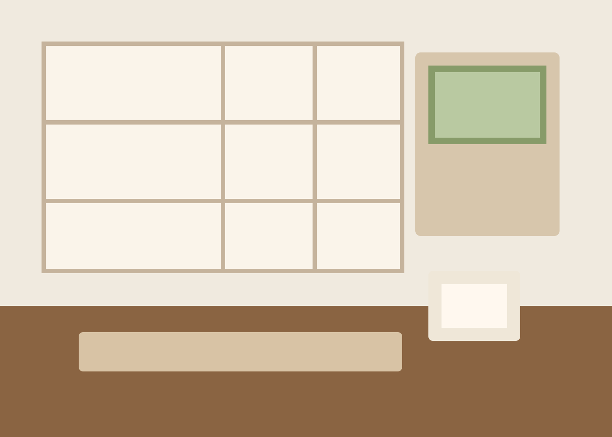
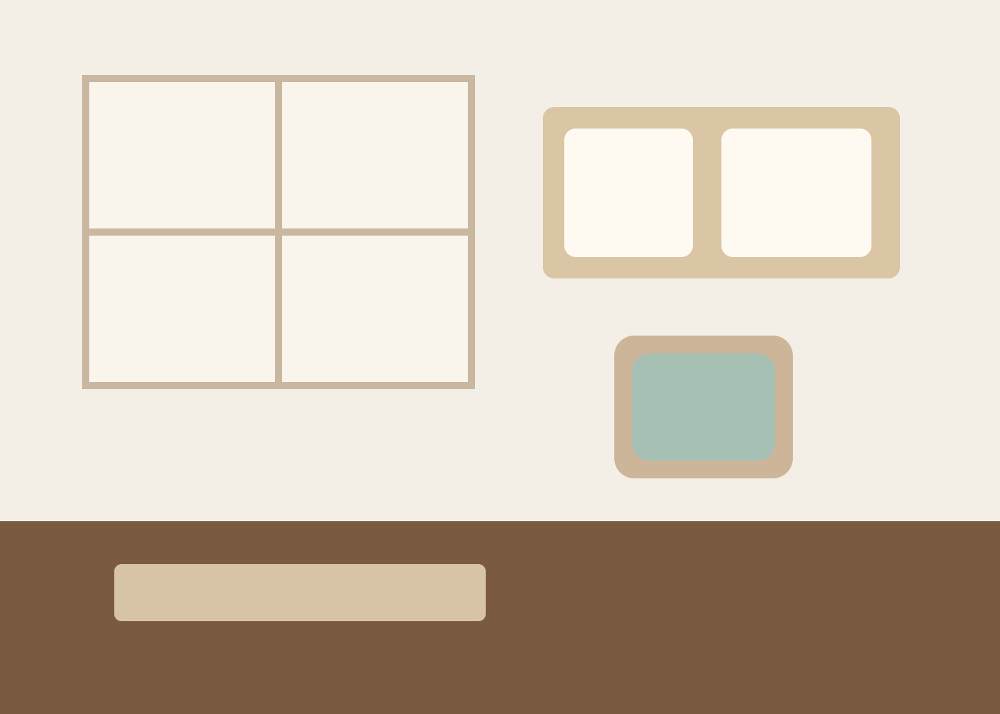
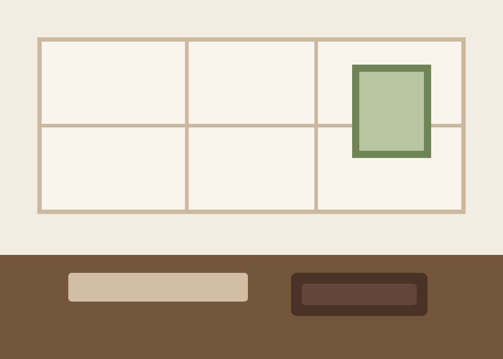

和室十畳
山吹
最も静かな中庭側にある基本客室。広縁に腰を下ろすと、朝は鳥の声、夕方は庭木の影がゆるやかに伸びていきます。
- 定員
- 1〜2名
- 広さ
- 和室10畳 + 広縁
- 設備
- 檜内風呂 / 茶器 / 加湿空気清浄機
- おすすめ
- 夫婦旅 / 一人での読書滞在
Rooms
客室はすべて趣の異なるしつらえです。景色、広さ、湯の有無、過ごし方に合わせてお選びください。

和室十畳
最も静かな中庭側にある基本客室。広縁に腰を下ろすと、朝は鳥の声、夕方は庭木の影がゆるやかに伸びていきます。

半露天風呂付和洋室
和の落ち着きとベッドの快適さを兼ねた一室。湯上がりに窓辺で過ごす時間まで含めて、長めの滞在に適した客室です。

特別室
床の間を備えた主室と、掘り炬燵の控え間を設けた二間続き。ご家族の節目や、静かなお祝いの席にもお使いいただけます。
滞在の目安
中庭に面した「山吹」は、最小限の物音で過ごしたい方に最適です。
「睡蓮」は半露天風呂とベッドを備え、身体への負担が少ない設計です。
「桔梗」は二間続きで、会話の場と休む場を自然に分けられます。
宿泊案内
チェックイン 15:00から / チェックアウト 11:00まで。夕食付プランは18:00までの到着をお願いしています。
小学生以上のお子様は全室でご利用可能です。未就学児の受け入れは「桔梗」のみ承ります。
食材変更は3日前までにご相談ください。内容に応じて可能な範囲で対応いたします。